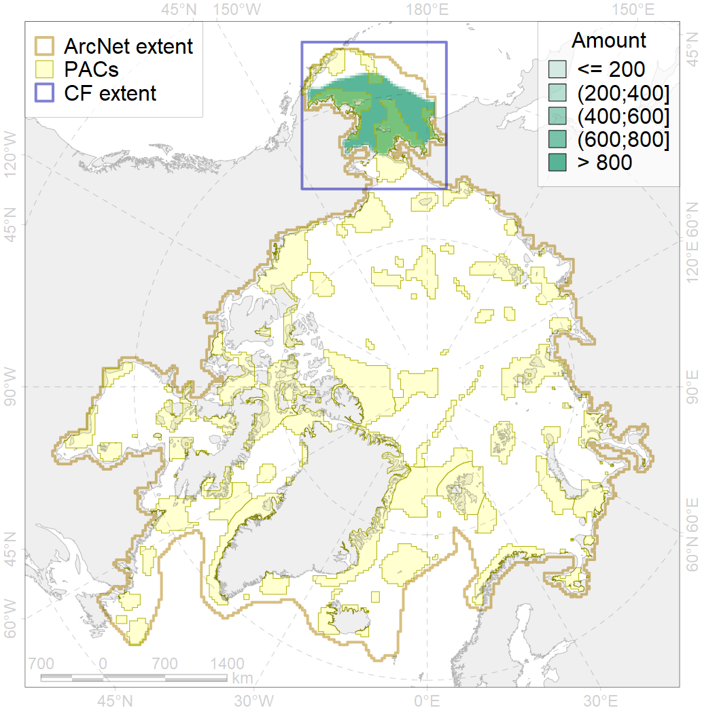
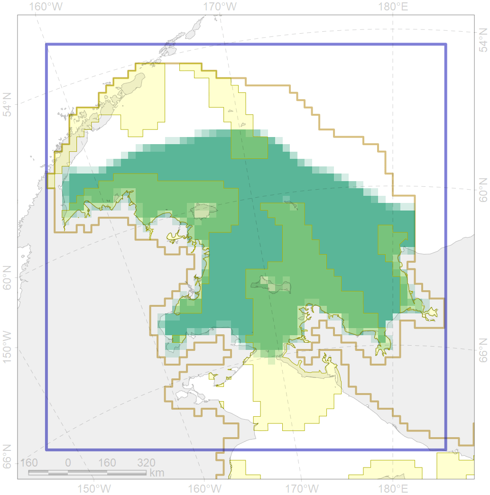

2006

| CF code | 2006 |
| CF name | Bearded seal whelping areas in the Bering Sea |
| Time Period | Varies by dataset |
| Source(s) | NOAA, 2002; NOAA, 1988; surrogate data; bathymetry from http://www.naturalearthdata.com/downloads/10m-physical-vectors/ |
| Seasonality | March-June |
| Depth Horizon | 0-200 m |
| Methodology | Data compilation, expert input |
| Use Restrictions | Open source |
| Author Name | Irina Trukhanova |
| Notes | |
| Scenario’s Target | 0.24 |
| Target Achievement | 0.424 (Scenario: 176.5%) |
| PAC | Share of the Total Amount within the PAC | Share of the Target Achievement for the ArcNet | PAC’s Contribution to the Target Achievement |
|---|---|---|---|
| 2 | 2.1%2.5% | 6.0%6.3% | 3.4%3.6% |
| 3 | 13.7%14.4% | 52.8%55.0% | 29.9%31.1% |
| 4 | 2.6%2.9% | 8.4%9.4% | 4.8%5.3% |
| 5 | 23.2%23.5% | 90.1%91.3% | 51.0%51.7% |
| inner | 41.6%43.3% | 157.4%162.0% | 89.1%91.7% |
| outer | 58.4%64.8% | 19.2%40.3% | 10.9%22.8% |
| † supplement values are for area consistence whereas principal values are for Accenter compatible gridded stats |